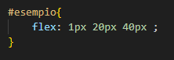

4


Questa proprietà, viene usata insieme a quella precedentemente spiegata, ovvero la "flex-Grow".
La sua funzione è definire un limite di grandezza minimo, quindi l'elemnto applicatosi questa regola, non può diventare più piccolo della dimensione stabilita.
Il parametro di default è "auto", che significa che gli elementi all'interno del contenitore mantengono la loro dimensione naturale.
Mentre se specifichiamo un paramentro , gli elementi acquisiranno, quel valore come nuova lunghezza di base.
Per illustrare questo concetto, osserviamo l'esempio preso in considerazione per il flex Grow:
L'unica modifica apportata in questo esempio è l'applicazione di questa proprietà.
In questo caso, applicando il 40% di dimensione base, l'elemento non si rimpicciolirà più della dimensione stabilita.
Attraverso la proprietà "flex", possiamo utilizzare i tag flex-Grow,flex-shrink e flex-basis contemporaneamente, attraverso questa proprietà.
Esempio:
Il primo parametro indica il flex-Grow.
Gli ultimi due parametri sono opzionali, questi controllano, in ordine flex-shrink e flex-basis.
Se non impostato un parametro verrano automaticamente impostati a "0".
4